1. 这是什么
九安自助审核平台 v0.7.10 加上 Nexus AI：对公付款单进单据池、读完原件后，九安自动把它交给 Nexus 上的审核 Agent，拿回一份 AI 独立建议：建议通过或不建议通过，附上依据（引用的规则、原件第几页）。人在单据池里看建议、看原件，采纳或改判。审核时要查的制度放在知识库里，由 Nexus 上的知识库 Agent 入库和检索。
测试台的站点是 https://jiuan-v0710.tinyboat.blog，数据全部虚构，复核不回写汇联易。

2. 你是谁、从哪开始
| 你是 | 先做 | 再读 |
|---|---|---|
| 审核员、分析员 | 第 3 节：登录、看 AI 建议、复核 | — |
| 管理员 | 第 3 节，再做第 4 节：把 Agent 接上 | 运维与后续迭代 |
| 部署的人（我们、九安运维） | 第 5 节：三块各一条命令的样子 | 交付指南 |
| 九安的开发、Agent 开发 | 第 3 节走一遍 | 开发者快速对接指南、Skills 配置指南、架构与技术评估、工作流 |
| 项目负责人 | 第 1–3 节 | 客户部署路线、交接文档 |
3. 第一次用：10 分钟走一遍
测试台已经部署好、管理员已经接好 Agent 时（参考环境就是这样），照下面走一遍。
- 登录：打开站点，选账号、填口令（口令由维护人当面给）。
poc-reviewer是管理员，看得到全部页面；poc-checker是分析员，看不到知识库、Agent 接入和设置。登录后先看到工作台：待我复核的张数、人工改判率、最常引用的规则。 - 单据池（左侧「审核」分组）：每张单一行，「AI
建议」一栏是结论（建议通过、不建议通过、审核中……），「复核」一栏是待复核、已采纳或已改判，「最近审核」一栏是最近一次
AI 建议或复核的时间和人。点一行打开右侧抽屉，有四个页签：
- AI 建议：结论和依据，依据上的「第 N 页」能跳到原件的那一页；
- 原件：按页看原件的文字；
- 单据信息、历史。
- 复核：抽屉底部「采纳 AI 建议」，或者「改判」（选原因，选「其他」要写备注）。复核后单据池的「待复核」少一张，工作台几秒内跟着变。AI 这一轮失败了，在抽屉里「重新审核」。
- 来一张新单（管理员）：打开
/poc/intake模拟来单一张，约 1 分钟后同步进单据池，读完原件后自动出 AI 建议（一轮一般 7–20 秒，上限 180 秒）。 - 知识库（管理员）：看制度清单（现在有效的是审批风险判断卡，449 条）、点「检索」问一个问题看命中的规则、「上传制度」传新的 .docx。清单存在测试台里，打开很快；页面上写着它是什么时候从知识库 Agent 读的。在别处改过知识库，就点「刷新清单」。
- 我的规则：上传自己的补充审核要求（Markdown 或 Word，每人最多 10 份）。你从单据页手动发起审核时，它会和公司制度一起交给审核 Agent，只会让结论更严。
- 设置：链到九安原来的后台配置和平台。九安原来的页面在
/analysis.html。
4. 管理员：把 Nexus 上的 Agent 接上
管理员为整个平台启用一次，所有人的单据池都用它。审批流只调管理员指定的一个「审批 Agent」。全程只在两个网页上操作，不改文件、不部署、不重启，第一次做完约 10 分钟。
4.1 两把密钥，别弄混
| API 密钥 | 调用密钥 | |
|---|---|---|
| 用来做什么 | 让平台用你的 Nexus 身份列出你发布的 Agent | 让平台调用某一个发布 |
| 在哪生成 | Nexus「个人设置 › API 密钥」，档位选只读 | Nexus「互联中心 › 对外发布」，在那个发布里签发 |
| 长什么样 | nxc_ 开头 |
nxa_ 开头 |
| 要几把 | 一把，连接一次就行（第一次连接时 Nexus 会换成新的，你复制的那串随即作废） | 每个要用的发布一把 |
| 粘贴到哪 | 「Agent 接入」页的「连接 Nexus」对话框 | 那个发布一行的「启用」对话框 |
两把都只能由你本人在 Nexus 网页上生成；只粘贴进对话框里的密码框，不发到聊天工具、邮件，也不写进任何文件。
4.2 八步

| 步 | 在哪 | 做什么 | 做完是什么样 |
|---|---|---|---|
| 1 | Nexus 网页：部署配置里 NEXUS_
指的那一套（测试台是 https://nxs-beine1013.tinyboat.blog；生产是另一套线上
Nexus AI https://d3u3hj2us186y.cloudfront.net/。别处生成的密钥这里不认） |
「互联中心 › 对外发布」里确认 Agent 已发布、没暂停、A2A
已打开。要进审批流的，名片要声明
review_；还没有发布就请 Agent 开发者先建（Skills 配置指南） |
找得到这个发布 |
| 2 | Nexus 网页 | 「个人设置 › API 密钥」新建一把，档位只读，复制 | 一串 nxc_ |
| 3 | 新前端 | 管理员登录，左侧「平台 › Agent 接入」 | 打开这一页 |
| 4 | 新前端 | 「连接 Nexus」，粘贴 API 密钥 | 顶上显示「已连接 Nexus」和你的账号，下面列出你开了 A2A 的发布；刚发布的没出现就点「刷新清单」 |
| 5 | Nexus 网页 | 在要用的发布里签发一把调用密钥，复制 | 一串 nxa_（只显示一次） |
| 6 | 新前端 | 这个发布一行「启用」，只粘贴调用密钥，「验证并启用」 | 平台当场向 Nexus 验名片和密钥（一般几秒，不花钱），这一行变「就绪」，之后只显示密钥的指纹。超过 1 分钟页面会报超时（站点前面 CloudFront 的限制），稍后再试 |
| 7 | 新前端 | 要它审单的：「设为审批 Agent」，写原因（同一时间只有一个）。然后「测试」：文本、请求信封、单据三种 | 表格上方写着审批流现在调谁；测试结果记进下面的调用记录，不改单据的结论（每分钟最多 5 次） |
| 8 | 新前端 | 回「单据池」：新单读完原件后自动发给审批 Agent | 「AI 建议」一栏出现结论 |
第 2、4 步只做一次；以后每接一个新 Agent，重复第 1、5、6、7
步。知识库 Agent「知识库文档管家（PG
版）」也在这一页启用：就绪、不设为审批
Agent。「知识库」页还要部署配置里写了它的发布编号（KB_PG_PUBLICATION_ID），没写就显示「知识库
Agent 还没配置」：写上后 deploy.sh --code-only 一次。不连
Nexus 也能接：用「手动添加 Agent」，贴它的 A2A
地址和调用密钥。
5. 从零部署一套（部署的人）
分三块，正式环境按这个顺序；每一步的完整命令、前提和「做完是什么样」见交付指南。
| 块 | 最短路径 | 做完是什么样 |
|---|---|---|
| 1. PG 与知识库后端 | 起一台主机（自己的 SSH 密钥），填
kb/（审核 Agent 还没建，写
AGENT_），cd kb && .，再去掉
-，然后
. |
除了「规则表不存在」（规则还没上传）各层都是 ✓；Nexus 上有 PG 数据连接器和数据库凭证密钥 |
| 2. Nexus 上的 Agent | PG 知识库 Agent 照
customer-
部署；审核
Agent：python3 audit-，再去掉
-，然后 apply.
同样先演练再下发；发布者本人签发两把调用密钥 |
两个 A2A 发布在线 |
| 3. 前端 | cp poc/
填好（包括第 2 块拿到的知识库 Agent 的发布编号
KB_；审核 Agent 的
PUBLICATION_ 由 setup.
写回，只给它和端到端测试用），DEPLOY_，再按第
4 节接好两个 Agent、在「知识库」页上传制度 |
https:/ 回
ok，单据池出 AI 建议 |
| 验收 | DEPLOY_ |
27 条全过 |
本机要有 Node.js 24、AWS CLI
v2、uv、python3、ssh、rsync、openssl、curl，跑端到端还要
Chrome。密钥配置 poc/infra/secrets.env
第一次部署时自动生成，当面交接，不进仓库。
6. 日常维护
| 情况 | 怎么做 |
|---|---|
| Agent 在 Nexus 上改了版本 | 「Agent 接入」页点「重新验证」 |
| 调用密钥过期或失效（显示「密钥失效」） | 在 Nexus 上签一把新的，「换钥匙」 |
| 不再用某个 Agent | 「停用」并确认：存着的调用密钥一并清除；停用的是审批 Agent 时审批流暂停 |
| 换一个审批 Agent | 在新的那个就绪的 Agent 上「设为审批 Agent」，写原因、确认替换 |
| 换一个 Nexus 账号 | 「断开 Nexus」，再用新账号的 API 密钥连接（旧的 API 密钥到 Nexus「个人设置」里停用） |
| 制度有变化 | 「知识库 › 上传制度」：同一个制度标识传新版本，只写变了的；不用的「下线」，可以「恢复」 |
| 在别处改了知识库 | 「知识库」页点「刷新清单」 |
7. 遇到问题
| 页面上的提示 | 原因 | 怎么办 |
|---|---|---|
| 还没有连接 Nexus | 还没连接，或连接失效了 | 「连接 Nexus」 |
| Nexus API 密钥无效、已经用过，或者不属于这个 Nexus | 这把已经被第一次连接换掉、停用了，或者是别的 Nexus 上生成的 | 新建一把再连接 |
| 连不上 Nexus | 网络或 Nexus 一时不通 | 等一会儿点「刷新清单」；不要因此换 API 密钥 |
| Nexus 不认这把密钥 / 密钥属于别的发布或发布已暂停 | 粘错了、不是这个发布签的，或发布暂停了 | 在这个发布里重新签一把；在 Nexus 上恢复发布 |
| 读不到名片 / 名片不合契约 | 发布暂停了，或 A2A 没打开 | 在 Nexus 上恢复发布、打开 A2A |
| 审批流还没有审批 Agent，AI 独立建议停着 | 没指定，或它停用、密钥失效 | 设审批 Agent，或给它换钥匙 |
单据的 AI 建议失败：AI_ |
Nexus 暂时不可用、额度用完，或 180 秒没答完 | 稍后「重新审核」；总是这样告诉 Agent 开发者（运维第 2.7 节） |
单据的 AI 建议失败：AI_ |
回答修正一次后仍不合格式 | 再试一次；总是这样告诉 Agent 开发者 |
| 「知识库」页：先在『Agent 接入』页启用知识库 Agent | 知识库 Agent 没启用或密钥失效 | 按第 4 节第 5、6 步启用 |
| 「知识库」页：知识库 Agent 暂时连不上 | Nexus 一时不通，或没在限定时间内答完 | 稍后再试；入库的话先看一下制度清单，可能已经写完 |
| 测试太频繁 | 每分钟最多 5 次 | 等一分钟 |